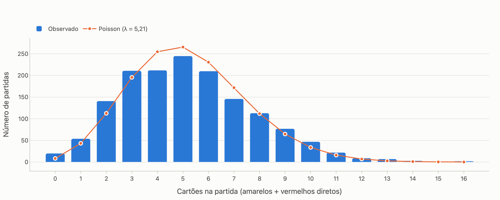
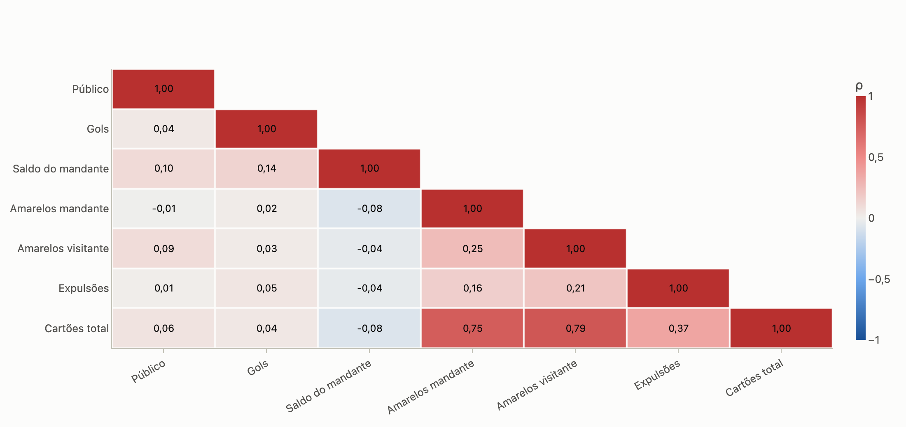
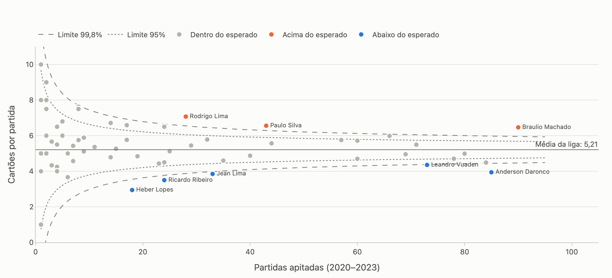
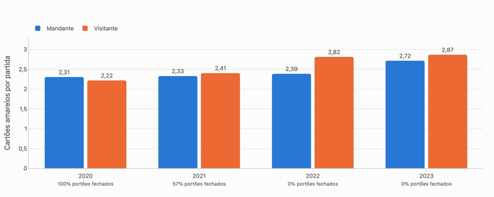
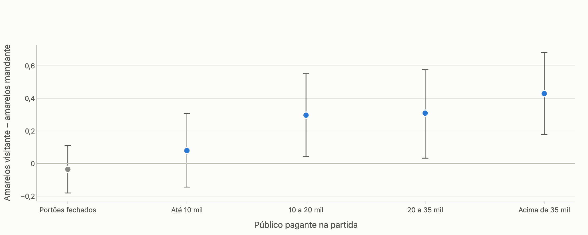
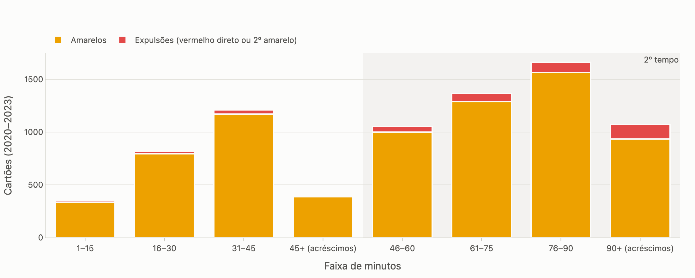
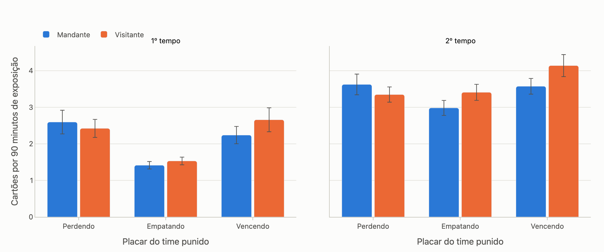

Cartão na Mesa: árbitros, torcida e placar na distribuição de cartões do Brasileirão Série A (2020–2023)
Natan Pereira Braslavsky de Oliveira
Pedro Duarte Machodo
Professor: Alexandre Neves Louzada
Bacharelado em Sistemas de Informação — Universidade La Salle
Disciplina: Linguagem de Programação (Análise e Visualização de Dados com Python) · 6º período · 2026/2
Resumo
Cartões amarelos e vermelhos são decisões discricionárias da arbitragem e, por isso, um bom indicador de como fatores externos ao jogo podem influenciar o resultado de uma partida. Este estudo analisa as 1.520 partidas do Campeonato Brasileiro Série A de 2020 a 2023 e os 7.921 cartões registrados nelas, a partir de uma base aberta que traz cada cartão com o jogador e o minuto. Um pipeline em Python (pandas, NumPy e SciPy) converte datas escritas por extenso, corrige o público registrado com separador de milhar, desaninha listas JSON e reconstrói o placar de cada partida minuto a minuto. Três perguntas foram investigadas. Primeiro, os árbitros diferem de forma significativa: a média vai de 3,5 a 7,1 cartões por jogo (Kruskal–Wallis, p < 0,001), e oito deles ficam fora dos limites de controle de um gráfico de funil. Segundo, o viés contra o visitante só aparece com torcida no estádio: com portões fechados, mandantes e visitantes receberam praticamente o mesmo número de amarelos (diferença de −0,04), enquanto com público o visitante recebeu 0,28 amarelo a mais por jogo, e a diferença cresce com o tamanho do público. Terceiro, 65% dos cartões saem no segundo tempo, e a maior taxa de punição é a do visitante que está vencendo na etapa final (4,1 cartões por 90 minutos). Os resultados reforçam, no contexto brasileiro, a evidência internacional de pressão social sobre a arbitragem.
Palavras-chave: Arbitragem; Viés do mandante; Futebol brasileiro; Análise exploratória de dados; Python; Princípios FAIR.
1. Introdução
No futebol, o árbitro decide em tempo real e sob pressão, e boa parte dessas decisões não pode ser revista pelo VAR: o cartão amarelo, a advertência mais frequente do jogo, quase nunca passa por revisão. Quando essas decisões pesam mais para um lado de forma sistemática, o resultado esportivo deixa de refletir só o desempenho em campo. Para clubes, comissões de arbitragem e torcedores, saber se esse desequilíbrio existe e de onde ele vem é uma questão de integridade da competição.
A literatura internacional encontrou um caso raro de experimento natural na pandemia de Covid-19: com os estádios vazios, a vantagem disciplinar do mandante diminuiu ou desapareceu em várias ligas europeias (ENDRICH; GESCHE, 2020; BRYSON et al., 2021), em linha com estudos anteriores que já associavam o viés do árbitro à pressão da torcida (SUTTER; KOCHER, 2004; PETTERSSON-LIDBOM; PRIKS, 2010). O Brasileirão passou pela mesma situação: a temporada 2020 foi disputada inteira sem público, e a de 2021 só recebeu torcedores na reta final. Isso permite repetir a comparação com dados brasileiros.
Este trabalho usa uma base aberta com o registro de cada cartão por jogador e minuto e responde a três perguntas de pesquisa:
- RQ1. Quanto o volume de cartões por partida varia entre árbitros, e quais árbitros se afastam do padrão da liga além do que o acaso explicaria?
- RQ2. A presença de torcida está associada a um viés disciplinar contra o time visitante?
- RQ3. Em que momentos da partida os cartões se concentram, e como a taxa de punição muda conforme o placar do momento?
2. Metodologia e Pipeline de Dados
2.1 Fonte e granularidade
A fonte primária é o conjunto brasileirao_cartoes_20-23 (BRAL, 2024), publicado no Kaggle sob licença CC0 (domínio público) e extraído das súmulas estatísticas da Opta. O arquivo partidas_20_23.csv (1,34 MB, UTF-8, separador vírgula) tem uma linha por partida, 1.520 linhas e 17 colunas. Cartões e gols ficam em colunas com listas JSON, uma por tipo de evento e por lado, e cada item traz o jogador e o minuto. Por isso a base tem também uma segunda granularidade, de evento, que o pipeline extrai em uma tabela própria com 11.558 registros.
2.2 Estratégias de tratamento
O arquivo é lido inteiramente como texto (dtype=str) para que nenhuma conversão implícita aconteça antes de ser auditada. As principais intervenções foram:
- Público com separador de milhar. O valor
"12.089"representa 12.089 torcedores, mas uma conversão numérica direta o lê como 12,089. O pipeline só aceita o padrão\d{1,3}(\.\d{3})*, remove os pontos e converte o resultado. - Valores ausentes declarados como texto. 613 partidas trazem
"No data"no público. Nada foi imputado: o valor viraNaNe, junto com a temporada, define a variável categóricatorcida. Ausência de público em 2020 e 2021 é tratada como portões fechados (598 jogos, coerente com as restrições sanitárias da época). Os 15 casos de 2022 e 2023 ficam como desconhecido e saem das comparações da RQ2. - Datas por extenso. Textos como
"25 de fevereiro de 2021 21:30"são convertidos com uma expressão regular e um dicionário de meses em português. - Temporada. A temporada 2020 terminou em fevereiro de 2021, então o ano da data não identifica o campeonato. A temporada é extraída da URL da fonte, e o resultado tem exatamente 380 jogos por edição.
- Minutos com acréscimo. Valores como
"90+3'"são separados em minuto-base e acréscimo, e uma chave de ordenação (90,03) mantém a ordem cronológica. - Expulsões. O segundo amarelo e o vermelho direto vêm em colunas separadas e não se sobrepõem. Por isso, amarelos = amarelos simples + segundos amarelos, expulsões = vermelhos diretos + segundos amarelos e cartões = amarelos + vermelhos diretos.
- Nomes. Textos passam por normalização Unicode (NFC) e limpeza de espaços. Os clubes ganham um nome curto padronizado, e o nome oficial é mantido em outra coluna.
Nenhuma linha foi descartada. Cada etapa registra em data/processed/relatorio_etl.json quantas linhas leu, converteu, removeu ou sinalizou. O pipeline também confere que o total de gols das listas JSON bate com o placar oficial nas 1.520 partidas (zero divergências).
def converter_publico(valor: str) -> float:
texto = valor.strip()
if texto in {"", "No data"}:
return np.nan
if not re.fullmatch(r"\d{1,3}(\.\d{3})*", texto):
return np.nan
return float(texto.replace(".", ""))
def converter_data(valor: str) -> pd.Timestamp:
padrao = re.fullmatch(r"(\d{1,2}) de (\w+) de (\d{4}) (\d{1,2}):(\d{2})", valor.strip())
if padrao is None:
return pd.NaT
dia, mes, ano, hora, minuto = padrao.groups()
return pd.Timestamp(int(ano), MESES[mes.lower()], int(dia), int(hora), int(minuto))2.3 Métricas derivadas
Além das contagens por partida, foram criadas três métricas para responder às perguntas de pesquisa:
- Diferença disciplinar (
dif_amarelos_vis_mand): amarelos do visitante menos amarelos do mandante na mesma partida. Valores positivos indicam que o visitante foi mais punido. - Placar momentâneo: para cada cartão, o saldo de gols do time punido logo antes do lance, obtido pela soma acumulada dos gols ordenados por minuto. Gols no mesmo minuto do cartão não entram, porque a ordem entre eles não pode ser determinada.
- Taxa por exposição: cartões por 90 minutos passados em cada situação de placar (perdendo, empatando ou vencendo), separada por tempo de jogo. Sem essa normalização, a situação “empatando” pareceria pouco punida só porque concentra o início das partidas, quando quase não há cartões.
def adicionar_placar_momentaneo(eventos: pd.DataFrame) -> pd.DataFrame:
gols = eventos["tipo"] == "gol"
eventos["_gm"] = (gols & (eventos["lado"] == "mandante")).astype(int)
eventos["_gv"] = (gols & (eventos["lado"] == "visitante")).astype(int)
chave = ["partida_id", "minuto_ordenacao"]
por_minuto = eventos.groupby(chave)[["_gm", "_gv"]].sum()
acumulado = por_minuto.groupby(level=0).cumsum() - por_minuto
...2.4 Persistência e análise estatística
As duas tabelas tratadas (partidas e eventos) são gravadas em Apache Parquet, que preserva os tipos (inteiros anuláveis, categorias e datas), e em CSV compactado com gzip, para leitura em qualquer ferramenta. Como a distribuição de cartões é discreta e assimétrica, as comparações usam testes não paramétricos: Kruskal–Wallis com tamanho de efeito ε² (RQ1), Mann–Whitney e Wilcoxon (RQ2) e qui-quadrado de aderência para as taxas por exposição (RQ3). Os intervalos de confiança de 95% foram obtidos por bootstrap com 10.000 reamostragens e semente fixa (42), para que os resultados sejam reprodutíveis.
3. Resultados e Discussão
3.1 Panorama descritivo
Uma partida típica teve 5 cartões (mediana), com intervalo interquartil de 3 a 7 e máximo de 16. A variância (6,65) é cerca de 28% maior que a média (5,21). Se todos os jogos tivessem a mesma propensão a cartões, a distribuição seguiria uma Poisson. A Figura 1 mostra que há mais partidas com poucos (0 a 2) e com muitos (8 ou mais) cartões do que esse modelo prevê. Essa sobredispersão indica que alguma coisa diferencia os jogos, e as três perguntas de pesquisa investigam candidatos para isso. Seis partidas passaram do limite de Tukey (Q3 + 1,5 × IQR = 13 cartões). Elas foram mantidas, porque são jogos reais com várias expulsões, e não erros de registro.

A matriz de correlação de Spearman (Figura 2) mostra que as variáveis disciplinares quase não se relacionam com o placar e o número de gols (|ρ| ≤ 0,08). Os amarelos de mandante e visitante têm correlação positiva moderada (ρ = 0,25): jogos tensos tendem a punir os dois lados. O público tem correlação fraca e positiva só com os amarelos do visitante (ρ = 0,09), o que antecipa o resultado da RQ2.

3.2 RQ1 — Os árbitros punem de forma diferente?
Entre os 25 árbitros com pelo menos 20 partidas (1.277 jogos no total), a média de cartões vai de 3,50 (Ricardo Marques Ribeiro) a 7,07 (Rodrigo José Pereira de Lima) por partida. O teste de Kruskal–Wallis rejeita a hipótese de que todos sigam a mesma distribuição (H = 138,5; p < 0,001), com efeito moderado (ε² = 0,09): o árbitro sozinho explica cerca de 9% da variação na ordem dos cartões entre partidas.
Comparar médias de árbitros com números de jogos muito diferentes pode enganar, porque quem apitou poucos jogos tem médias extremas só por acaso. O gráfico de funil (SPIEGELHALTER, 2005) da Figura 3 resolve isso: os limites de controle se estreitam conforme o árbitro acumula partidas. Oito árbitros ficam fora da faixa de 99,8%. Três estão acima do esperado, entre eles Braulio da Silva Machado, o mais escalado do período (90 jogos, 6,47 cartões por partida). Cinco estão abaixo, entre eles Anderson Daronco (85 jogos, 3,94). Um desses cinco, Heber Roberto Lopes, apitou 18 partidas e por isso não entra na Tabela 1. Na prática, com o mesmo número de jogos, escalar um ou outro representa uma diferença de cerca de 2,5 cartões por partida.

| Árbitro | Partidas | Cartões/jogo | Expulsões/jogo | Classificação |
|---|---|---|---|---|
| Rodrigo José Pereira de Lima | 28 | 7,07 | 0,50 | Acima |
| Paulo Cesar Zanovelli da Silva | 43 | 6,56 | 0,51 | Acima |
| Braulio da Silva Machado | 90 | 6,47 | 0,36 | Acima |
| Leandro Pedro Vuaden | 73 | 4,36 | 0,18 | Abaixo |
| Anderson Daronco | 85 | 3,94 | 0,25 | Abaixo |
| Jean Pierre Goncalves Lima | 33 | 3,85 | 0,18 | Abaixo |
| Ricardo Marques Ribeiro | 24 | 3,50 | 0,21 | Abaixo |
Esse resultado não permite dizer que um árbitro é “rigoroso” ou “permissivo” por característica pessoal, já que a escala não é aleatória: árbitros mais experientes costumam receber clássicos e jogos decisivos, que têm mais faltas. Ainda assim, a dispersão observada é grande demais para ser explicada só pelo acaso.
3.3 RQ2 — A torcida pesa contra o visitante?
A pandemia criou dois cenários comparáveis. Nas 598 partidas com portões fechados, mandantes e visitantes receberam praticamente o mesmo número de amarelos (2,30 e 2,26 por jogo). A diferença média foi de −0,04 (IC 95%: −0,18 a 0,11) e o teste de Wilcoxon não a distingue de zero (p = 0,51). Nas 907 partidas com público, o visitante recebeu 2,80 amarelos contra 2,52 do mandante, uma diferença de +0,28 (IC 95%: 0,15 a 0,40; p < 0,001). A variação entre os dois cenários é de 0,31 amarelo por jogo (IC 95% bootstrap: 0,12 a 0,50; Mann–Whitney, p = 0,002).

A Figura 5 mostra uma relação de dose-resposta: a diferença contra o visitante cresce com o tamanho do público. Ela fica perto de zero com portões fechados e em jogos com até 10 mil pagantes e chega a +0,43 amarelo por jogo acima de 35 mil. A correlação entre público e diferença disciplinar é fraca, mas significativa (ρ = 0,07; p = 0,04). Esse padrão coincide com a literatura europeia (ENDRICH; GESCHE, 2020; BRYSON et al., 2021) e é compatível com a pressão social da arquibancada sobre o árbitro.

| Indicador | Portões fechados | Com público |
|---|---|---|
| Partidas | 598 | 907 |
| Amarelos do mandante | 2,30 | 2,52 |
| Amarelos do visitante | 2,26 | 2,80 |
| Diferença (visitante − mandante) | −0,04 | +0,28 |
| Vitórias do mandante | 42,5% | 47,6% |
| Saldo de gols do mandante | +0,28 | +0,42 |
A vantagem esportiva do mandante também cresce com o público: a taxa de vitórias vai de 42,5% para 47,6% e o saldo médio de gols, de +0,28 para +0,42. A comparação entre temporadas, porém, não isola só o efeito da torcida. O total de cartões subiu de 4,72 (2020) para 5,79 (2023) por jogo, possivelmente por mudanças de critério da arbitragem e pelo calendário comprimido de 2020. Por isso a análise se concentra na diferença entre os dois times da mesma partida, que neutraliza esses fatores comuns.
3.4 RQ3 — Quando e em que placar os cartões aparecem?
Os cartões se acumulam ao longo do jogo (Figura 6): 65% saem no segundo tempo, o minuto mediano é o 62 e 18,6% acontecem nos acréscimos. Os 15 minutos finais do tempo regulamentar formam a faixa com mais cartões, e os acréscimos do segundo tempo concentram as expulsões: 136 das 447 do período (30%) ocorreram depois do minuto 90. Isso combina com o desgaste físico e com a reação a lances decisivos no fim da partida.

A Figura 7 mostra as taxas de cartões normalizadas pelo tempo de exposição. No primeiro tempo, quem está empatando é muito menos punido (1,47 por 90 minutos) do que quem está perdendo (2,49) ou vencendo (2,40), já que um placar aberto aumenta a intensidade do jogo para os dois lados. No segundo tempo, a maior taxa é a de quem está vencendo (3,78), acima de quem está perdendo (3,45) (χ² = 25,3; p < 0,001). O caso mais extremo é o do visitante que vence na etapa final, com 4,14 cartões por 90 minutos, a maior taxa de todas as combinações. Esse padrão é compatível com o uso de faltas táticas e da cera para segurar o resultado, punidas com amarelo, e com a pressão da torcida local, que deixa o árbitro mais propenso a punir o adversário nesse momento.

4. Conclusão
As três perguntas de pesquisa tiveram respostas consistentes. (RQ1) Há diferença significativa e prática entre árbitros: oito deles ficam fora dos limites de controle esperados pelo acaso, e a distância entre o mais e o menos rigoroso entre os mais escalados passa de dois cartões por jogo. (RQ2) O viés contra o visitante depende da torcida: desaparece com portões fechados, volta com público e cresce com o tamanho da plateia, o que reproduz no Brasil o experimento natural observado na Europa durante a pandemia. (RQ3) Os cartões se concentram no segundo tempo e nos acréscimos, e o time que está vencendo na etapa final, especialmente fora de casa, é o mais punido por minuto em campo.
Limitações. Os dados são observacionais e não registram faltas cometidas. Por isso não é possível separar um time mais faltoso de um árbitro mais rigoroso. A escala de árbitros não é aleatória. A classificação de “portões fechados” supõe que o público ausente em 2020 e 2021 corresponde a jogos sem torcida, e uma parte de 2021 teve capacidade reduzida. A exposição por placar usa minutos nominais, então os acréscimos ficam um pouco subestimados. As conclusões valem para associações, não para causalidade.
Trabalhos futuros. Integrar faltas e posse de bola por partida para modelar a taxa de cartões por falta, ajustar modelos de regressão binomial negativa com efeitos aleatórios de árbitro e de clube, e ampliar a base para temporadas anteriores a 2020, a fim de testar se o viés do mandante mudou após a adoção do VAR em 2019.
5. Disponibilidade dos Dados e Declaração FAIR
Declaração de Aderência FAIR
- Findable (Localizável): repositório público com
README.mdcontendo resumo, palavras-chave padronizadas, autoria, instituição e link permanente para a fonte original no Kaggle. Este artigo traz metadadoscitation_*e Dublin Core no cabeçalho HTML. - Accessible (Acessível): todo o código e os dados estão no GitHub, sem autenticação. O arquivo bruto (1,34 MB) está versionado em
data/raw/, e a funçãobaixar_dados_brutos()busca a fonte original pelo endpoint público do Kaggle, sem credenciais. - Interoperable (Interoperável): dados tratados em formatos abertos (
.parquete.csv.gz), dicionário de variáveis emdata/data_dictionary.mde tabelas de resultados em CSV e JSON emdocs/assets/tabelas/. - Reusable (Reutilizável): código sob licença MIT; dados derivados e texto sob CC-BY 4.0 (a fonte original é CC0). Dependências travadas em
requirements.txt, semente fixa nas reamostragens e relatório de rastreabilidade do ETL.
Reprodução integral do pipeline
Os comandos abaixo recriam o ambiente, regeneram data/processed/ com o ETL e as figuras e tabelas de docs/assets/, e abrem o notebook. No Windows, o ambiente é ativado com .venv\Scripts\activate.
git clone https://github.com/NatanBraslavsky/g2-projetopratico.git
cd g2-projetopratico
python3 -m venv .venv
source .venv/bin/activate
pip install -r requirements.txt
python -m src.etl
python -m src.figuras
jupyter notebook notebooks/analise_exploratoria.ipynb6. Referências
- BRAL, Lucas. brasileirao_cartoes_20-23: data from the Brazilian Football Championship Série A from 2020 to 2023. Kaggle, 2024. Disponível em: <https://www.kaggle.com/datasets/lucasbral/brasileirao-cartoes-20-23>. Acesso em: 16 nov. 2026.
- BRYSON, Alex et al. Causal effects of an absent crowd on performances and refereeing decisions during Covid-19. Economics Letters, v. 198, p. 109664, 2021.
- ENDRICH, Marek; GESCHE, Tobias. Home-bias in referee decisions: evidence from “Ghost Matches” during the Covid19-Pandemic. Economics Letters, v. 197, p. 109621, 2020.
- McKINNEY, Wes. Data structures for statistical computing in Python. In: PYTHON IN SCIENCE CONFERENCE, 9., 2010, Austin. Proceedings [...]. Austin: SciPy, 2010. p. 56-61.
- PETTERSSON-LIDBOM, Per; PRIKS, Mikael. Behavior under social pressure: empty Italian stadiums and referee bias. Economics Letters, v. 108, n. 2, p. 212-214, 2010.
- PLOTLY TECHNOLOGIES INC. Collaborative data science. Montréal, 2015. Disponível em: <https://plot.ly>. Acesso em: 16 nov. 2026.
- SPIEGELHALTER, David J. Funnel plots for comparing institutional performance. Statistics in Medicine, v. 24, n. 8, p. 1185-1202, 2005.
- SUTTER, Matthias; KOCHER, Martin G. Favoritism of agents: the case of referees’ home bias. Journal of Economic Psychology, v. 25, n. 4, p. 461-469, 2004.
- VIRTANEN, Pauli et al. SciPy 1.0: fundamental algorithms for scientific computing in Python. Nature Methods, v. 17, p. 261-272, 2020.
- WILKINSON, Mark D. et al. The FAIR Guiding Principles for scientific data management and stewardship. Scientific Data, v. 3, p. 160018, 2016.